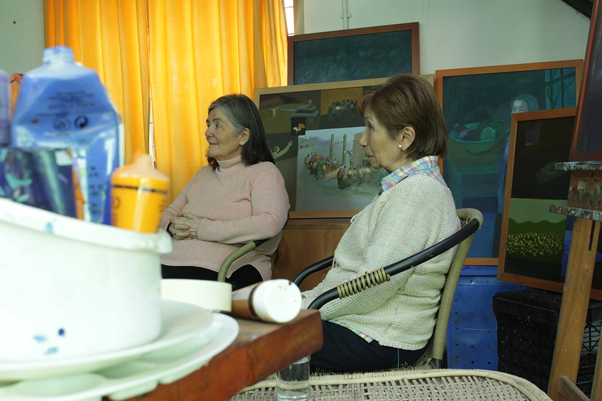

Documental Victoria Díaz Caro
Cliente: Corporación de los Hornos de Lonquén.
Tipo: Cortometraje documental.
Rol: Realizador audiovisual y editor.
Cortometraje documental de aproximadamente diez minutos sobre la trayectoria artística de Victoria Díaz Caro y su vinculación con la memoria y los derechos humanos.
Funciones: Grabación, edición y posproducción.
Enlaces disponibles: